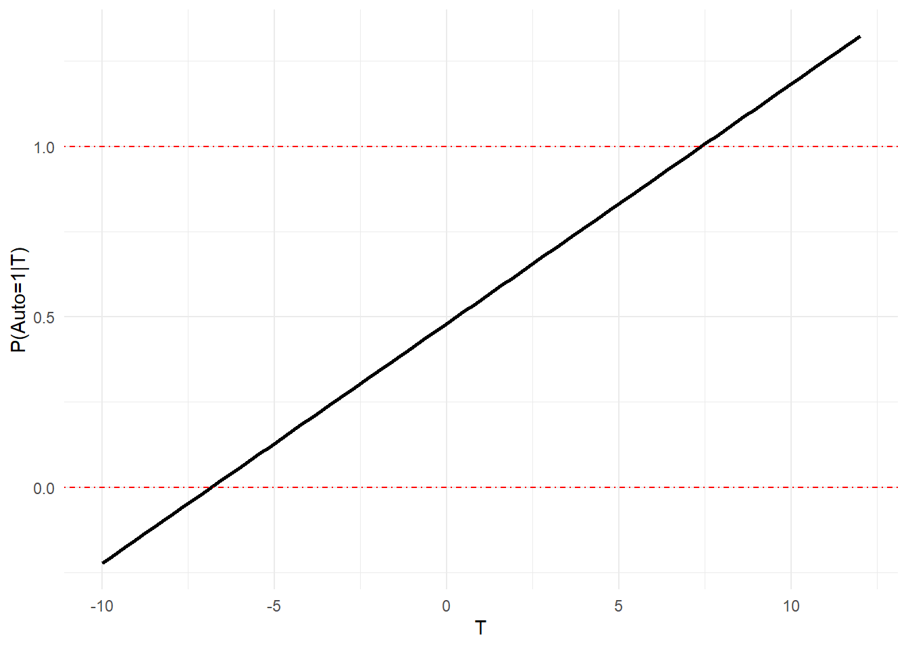
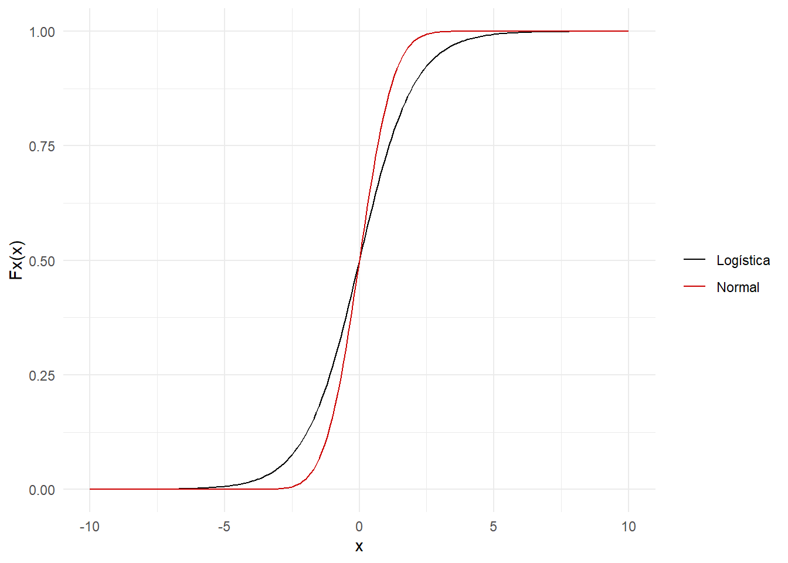
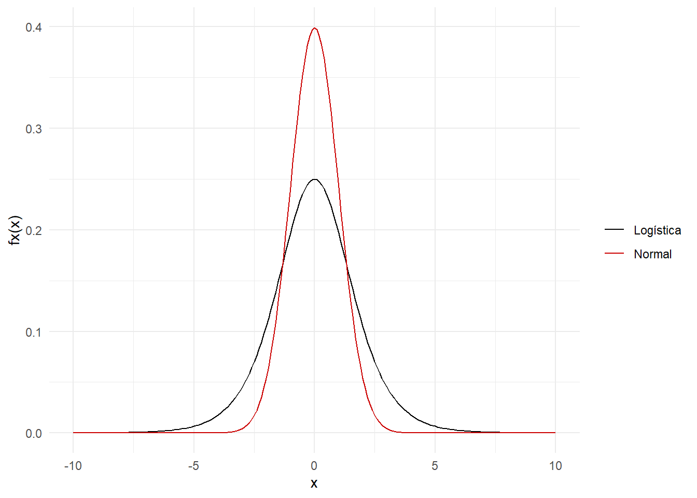
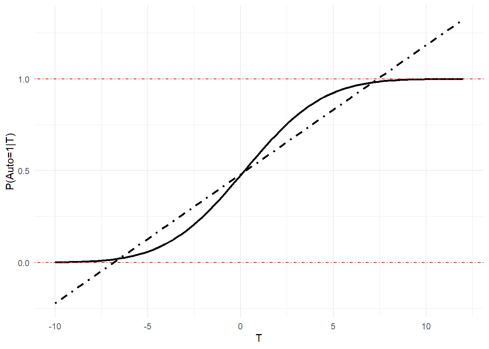
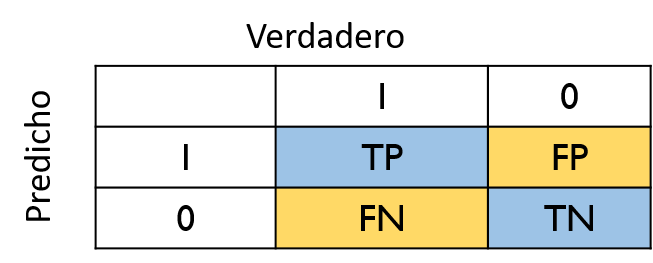

Capítulo4 Modelos de elección discreta
4.1 Naturaleza del problema
Muchos fenómenos económicos tienen que ver con decisiones que toman los agentes. Por ejemplo, si decide cursar estudios universitarios, \(y=1\) o no, \(y=0\).
Implica que para una muestra de datos podemos calcular la proporción de individuos que tomaron cada decisión. Esto sería el chance de que ocurra el evento
A partir de los axiomas que definen la probabilidad, podemos deducir a partir de la probabilidad de un evento, \(P(A)\), la probablidad de otro evento, \(P(B)\)
Nos interesa modelar la probabilidad de ocurrencia del evento, la decisión, dadas determinadas circunstancias
4.2 El modelo de probabilidad lineal
La variable dependiente representa la elección entre dos alternativas, A y B, para cada individuo \(i\) se representa como
\[ \tag{1} y_i= \begin{cases} 1,& \text{Si la alternativa A se elige}\\ 0, & \text{Si la alternativa B se elige} \end{cases} \]
Escribimos el modelo como
\[ \tag{2} y=\beta_0+\beta_1x_1+\beta_2x_2+...+\beta_3x_3+u \]
Tomamos el valor esperado condicional
\[ E(y|\mathbf{x})=\beta_0+\beta_1x_1+...+\beta_kx_k+E(u|\mathbf{x}) \]
- Además, dada la naturaleza de \(y\)
\[ \tag{3} E(y|\mathbf{x})=P(y=1|\mathbf{x})1+(1-P(y=1|\mathbf{x}))0 \]
Si, además se cumple exogeneidad estricta \(E(u|\mathbf{x})\), entonces
\[ \tag{4} P(y=1|\mathbf{x})=\beta_0+\beta_1x_1+...+\beta_kx_k \]
En este modelo
\[ \beta_j=\dfrac{\Delta P(y=1|\mathbf{x})}{\Delta x_j} \]
Los parámetros los estimamos por MCO, y a partir de ello podemos obtener la probabilidad predicha
\[ \hat{y}=\hat{P}(y=1|\mathbf{x})=\hat{\beta_0}+\hat{\beta}_1x_1+...+\hat{\beta}_kx_k \]
4.2.1 Ejemplo
\[ Auto_i= \begin{cases} 1,& \text{Va en automóvil}\\ 0, & \text{Va en bus} \end{cases} \]
Estima
\[ \hat{Auto}=0.48+0.0703T \]
Donde \(T=(TBus-TAuto)/10\) es el tiempo de desplazamiento en bus en relación al desplazamiento en automóvil
Si \(T=0\) entonces la probabilidad de ir en automóvil es 0.48
Si \(T\) pasa de \(0\) a \(1\), entonces la probabilidad se incrementa de \(0.48\) a \(0.55\)

Probablidades por fuera del rango 0-1
4.2.2 Heterocedasticidad en el LPM
Si \(y_i=1\) entonces \(\beta_0+\beta_{i1}x_1+...+\beta_kx_{ik}+u_i=1\), luego
\[\begin{equation} u_i=1-(\beta_0+\beta_1x_{i1}+...+\beta_kx_{ik}) \end{equation}\]
Y si \(y_i=0\)
\[\begin{equation} u_i=-(\beta_0+\beta_1x_{i1}+...+\beta_kx_{ik}) \end{equation}\]
Luego \(u_i\) toma dos valores, por lo tanto su varianza es
\[ Var(u|\mathbf{x})=P(X=1|\mathbf{x})[1-P(X=1|\mathbf{x})]=\sigma_i^2 \]
Es heterocedástica pues depende de los valores de \(x\). Debemos usar errores estándar robustos
4.3 Modelos Logit y Probit
4.3.1 Especificación
En el modelo de probabilidad lineal modelamos la probabilidad de ocurrencia
\[ P(y=1|\mathbf{x})=\beta_0+\beta_1x_1+...+\beta_kx_k \]
Sin embargo, sabemos que podemos obtener predicciones por fuera del intervalo \((0,1)\).
Para solucionarlo, usamos una función \(0<G(z)<1\) para todos los números reales \(z\)
\[ \tag{5} P(y=1|\mathbf{x})=G(\beta_0+\beta_1x_1+...+\beta_kx_k) \]
Se suelen usar dos funciones de dsitribución acumulada para \(G\): logística, normal. Recuerde que la CDF de la variable aleatoria \(\mathbf{x}\) es \(F_x(x)=P(\mathbf{x}\leq x)\)
- Logística
\[ \tag{6} G(z)=\dfrac{e^z}{1+e^z}=\Lambda(z) \]
- Normal
\[ \tag{7} G(z)=\Phi(z)=\int_{\infty}^z \phi(v)dv \]
Donde
\[ \phi(z)=(2\pi)^{-1/2}e^{(-z^2/2)} \]
4.3.2 Función acumulada de distribución (CDF)

4.3.3 Función acumulada de distribución (pdf)

\(f_x(x)=\dfrac{F_x(x)}{dx}\)
4.3.4 Probablilidad predicha: LPM vs Probit

\(\hat{Auto}=\Phi(-0.0064+0.3T)\)
4.3.5 Interpretación: efectos marginales
Llamamos \(p(\mathbf{x})=P(y=1|\mathbf{x})\). Queremos calcular el cambio en la probabilidad de ocurrencia dado un cambio en \(x_j\).
Variable Continua
\[ \tag{7} \dfrac{\partial p(\mathbf{x})}{\partial x_j}=\dfrac{\partial G(z)}{\partial z}\beta_j \]
- Para la logística es
\[ \dfrac{\partial G(z)}{\partial z}=\dfrac{e^z}{(1+e^z)^2} \]
- Para la normal
\[ \dfrac{\partial G(z)}{\partial z}=\phi(z) \]
Variable Discreta
Digamos que \(x_1\) toma valores de \(0\) y \(1\)
\[ \Delta p(\mathbf{x})=G(\beta_0+\beta_1+\beta_2x_2+...+\beta_kx_k)-G(\beta_0+\beta_2x_2+...+\beta_kx_k) \]
En cualquier caso debemos decidir los valores de \(\mathbf{x}\) en los que evaluamos la función \(G\). Tenemos 3 opciones
1. MEM: Efecto marginal en la media \(\bar{\mathbf{x}}=(\bar{x_1},...,\bar{x}_k)\)
2. MER: Valor marginal en el un valor representativo: escoge los valores de \(\mathbf{x}\) que quiera
3. AME: Efecto marginal promedio. Promediamos los efectos marginales individuales en la muestra. Este valor es similar al que se obtiene por LPM
4.3.5.1 AME
En el caso de variable continua
\[\begin{equation} AME(x_j)=n^{-1}\beta_j\sum_{i=1}^n g(\beta_0+\beta_1x_{i1}+\beta_2x_{i2}+...+\beta_kx_{ik}) \end{equation}\]
Donde \(g(z)=\dfrac{\partial G(z)}{\partial z}\)
En el caso de variable discreta, supongamos \(x_1\) es una dummy
\[\begin{equation} AME(x_1)=n^{-1}\sum_{i=1}^n\Big(G(\beta_0+\beta_1+...+\beta_kx_k)-G(\beta_0+...+\beta_kx_k) \Big) \end{equation}\]
- Es decir que para cada individuo se estima la probabilidad cuando \(x_1=1\) y cuando \(x_1=0\) y se toma la diferencia. En la terminología de contrafactuales esto sería el efecto de tratamiento promedio.
4.3.6 Medidas de ajuste

- Correctamente predicho
\[ ACC=\dfrac{TP+TN}{TP+TN+FP+FN} \]
- Sensibilidad (Tasa de verdadero positivo)
\[ S=\dfrac{TP}{TP+FN}=\dfrac{TP}{P} \]
- Especificidad (tasa de verdadero negativo)
\[ SP=\dfrac{TN}{TN+FP}=\dfrac{TN}{N} \]
4.4 Ejercicio de aplicación
En la industria crediticia es muy importante identificar los factores que pueden dar lugar a que los deudores no honren a tiempo sus obligaciones, es decir que entren en default. Para ello usaremos los datos vegas5.xlsx que hacen parte del libro de texto Principles of Econometrics5. Las variables son las siguientes
default: 1 si el individuo se ha retrasado en más de 90 días, 0 si no se ha retrasado. Esta es la variable dependiente
arm: dummy que indica si la tasa de interés es ajustable
refinance: 1 si el crédito es para refinanciar o si es para compra de inmueble
lien2: Si hay un segundo lien hipotecario toma el valor de 1, 0 si es el primer lien. Un lien hipotecario es el derecho que tiene el prestamista de tomar posesión del inmueble si el deudor entra en cesasión de pagos.
term30: 1 si el plazo es de 30 años, 0 si es de 15 años
underwater: 1 si la deduda se estima en un valor mayor que el de la propiedad en el momento de originar el crédito
LTV: loan to value de la propiedad, en porcentaje
rate: tasa de interés sobre la deuda, porcentaje
amount: valor del crédito en unidades de \(\$10,000\)
fico: puntaje de crédito al momento de otorgamiento del crédito.
4.5 Estimaciones
1. Modelo de probabilidad lineal: estime la siguiente ecuación por MCO y con errores estándar robustos
\[ default=\beta_0+\beta_1arm+\beta_2refinance+\beta_3lien2+\beta_4term30+\beta_5underwater+\beta_6ltv+\beta_7rate+\beta_8amount+\beta_9fico+e \]
| coefficient | Std. Error | t-value | p-value | |
|---|---|---|---|---|
| (Intercept) | 0.451 | 0.069 | 6.503 | 0.000 |
| arm | -0.024 | 0.010 | -2.379 | 0.017 |
| refinance | -0.048 | 0.010 | -4.965 | 0.000 |
| lien2 | 0.182 | 0.026 | 6.962 | 0.000 |
| term30 | -0.017 | 0.014 | -1.223 | 0.221 |
| underwater | 0.178 | 0.019 | 9.199 | 0.000 |
| ltv | 0.005 | 0.000 | 11.947 | 0.000 |
| rate | 0.040 | 0.003 | 15.484 | 0.000 |
| amount | 0.000 | 0.000 | -0.988 | 0.323 |
| fico | -0.001 | 0.000 | -15.049 | 0.000 |
Verifiquemos el comportamiento de los residuales. Hagamos la prueba de Breush-Pagan
bptest(lpm1)
studentized Breusch-Pagan test
data: lpm1
BP = 772.52, df = 9, p-value < 2.2e-16Dado que tenemos evidencia de heterocedasticidad, procedemos a estimar el modelo con errores estándar robustos
lpm1r<-coeftest(lpm1, vcov = vcovHC(lpm1, type="HC1"))
kable(tidy(lpm1r), digits=4, align='c',caption=
"LPM", col.names=c("","coefficient", "Robust Std. Error", "t-value", "p-value"))| coefficient | Robust Std. Error | t-value | p-value | |
|---|---|---|---|---|
| (Intercept) | 0.4514 | 0.0681 | 6.6252 | 0.0000 |
| arm | -0.0239 | 0.0102 | -2.3374 | 0.0194 |
| refinance | -0.0483 | 0.0097 | -4.9711 | 0.0000 |
| lien2 | 0.1821 | 0.0234 | 7.7859 | 0.0000 |
| term30 | -0.0174 | 0.0139 | -1.2553 | 0.2094 |
| underwater | 0.1782 | 0.0147 | 12.1381 | 0.0000 |
| ltv | 0.0050 | 0.0004 | 13.0408 | 0.0000 |
| rate | 0.0400 | 0.0026 | 15.5933 | 0.0000 |
| amount | -0.0002 | 0.0002 | -1.2463 | 0.2127 |
| fico | -0.0011 | 0.0001 | -15.3711 | 0.0000 |
Interprete los coeficientes
2. Estime el modelo logit
Call:
glm(formula = default ~ arm + refinance + lien2 + term30 + underwater +
ltv + rate + amount + fico, family = "binomial", data = vegas5)
Deviance Residuals:
Min 1Q Median 3Q Max
-2.1174 -0.9403 -0.6598 1.1405 2.7382
Coefficients:
Estimate Std. Error z value Pr(>|z|)
(Intercept) -0.8306594 0.3495402 -2.376 0.01748 *
arm -0.1434127 0.0483486 -2.966 0.00301 **
refinance -0.2404201 0.0476051 -5.050 4.41e-07 ***
lien2 1.2776049 0.1580227 8.085 6.22e-16 ***
term30 -0.0698832 0.0724898 -0.964 0.33503
underwater 1.2418800 0.1213201 10.236 < 2e-16 ***
ltv 0.0254911 0.0021861 11.660 < 2e-16 ***
rate 0.1906607 0.0128088 14.885 < 2e-16 ***
amount -0.0013225 0.0013039 -1.014 0.31045
fico -0.0052253 0.0003692 -14.154 < 2e-16 ***
---
Signif. codes: 0 '***' 0.001 '**' 0.01 '*' 0.05 '.' 0.1 ' ' 1
(Dispersion parameter for binomial family taken to be 1)
Null deviance: 13178 on 9999 degrees of freedom
Residual deviance: 11912 on 9990 degrees of freedom
AIC: 11932
Number of Fisher Scoring iterations: 42. Estime el modelo probit
Call:
glm(formula = default ~ arm + refinance + lien2 + term30 + underwater +
ltv + rate + amount + fico, family = binomial(link = "probit"),
data = vegas5)
Deviance Residuals:
Min 1Q Median 3Q Max
-2.1129 -0.9454 -0.6634 1.1448 2.9244
Coefficients:
Estimate Std. Error z value Pr(>|z|)
(Intercept) -0.3908903 0.2085569 -1.874 0.06089 .
arm -0.0844379 0.0293512 -2.877 0.00402 **
refinance -0.1484383 0.0287391 -5.165 2.4e-07 ***
lien2 0.7400364 0.0890195 8.313 < 2e-16 ***
term30 -0.0374059 0.0432364 -0.865 0.38696
underwater 0.7168854 0.0671228 10.680 < 2e-16 ***
ltv 0.0150133 0.0012924 11.617 < 2e-16 ***
rate 0.1140099 0.0076793 14.846 < 2e-16 ***
amount -0.0007109 0.0007626 -0.932 0.35122
fico -0.0032324 0.0002224 -14.531 < 2e-16 ***
---
Signif. codes: 0 '***' 0.001 '**' 0.01 '*' 0.05 '.' 0.1 ' ' 1
(Dispersion parameter for binomial family taken to be 1)
Null deviance: 13178 on 9999 degrees of freedom
Residual deviance: 11914 on 9990 degrees of freedom
AIC: 11934
Number of Fisher Scoring iterations: 54. Calcule el efecto marginal promedio para los modelos logit y probit. Use el paquete margins
library(margins)
marglogit<-margins(mlogit)
marprobit<-margins(mprobit)
summary(marglogit) factor AME SE z p lower upper
amount -0.0003 0.0003 -1.0145 0.3104 -0.0008 0.0003
arm -0.0295 0.0099 -2.9705 0.0030 -0.0489 -0.0100
fico -0.0011 0.0001 -14.7146 0.0000 -0.0012 -0.0009
lien2 0.2624 0.0322 8.1595 0.0000 0.1994 0.3254
ltv 0.0052 0.0004 11.9523 0.0000 0.0044 0.0061
rate 0.0392 0.0025 15.5250 0.0000 0.0342 0.0441
refinance -0.0494 0.0097 -5.0733 0.0000 -0.0685 -0.0303
term30 -0.0144 0.0149 -0.9642 0.3349 -0.0435 0.0148
underwater 0.2551 0.0246 10.3823 0.0000 0.2069 0.3032summary(marprobit) factor AME SE z p lower upper
amount -0.0002 0.0003 -0.9323 0.3512 -0.0007 0.0003
arm -0.0287 0.0099 -2.8800 0.0040 -0.0482 -0.0092
fico -0.0011 0.0001 -15.0092 0.0000 -0.0012 -0.0010
lien2 0.2511 0.0300 8.3826 0.0000 0.1924 0.3099
ltv 0.0051 0.0004 11.8467 0.0000 0.0043 0.0059
rate 0.0387 0.0025 15.3497 0.0000 0.0338 0.0436
refinance -0.0504 0.0097 -5.1848 0.0000 -0.0694 -0.0313
term30 -0.0127 0.0147 -0.8653 0.3869 -0.0414 0.0161
underwater 0.2433 0.0225 10.8258 0.0000 0.1992 0.28735. Matriz de confusión
vegas5<-vegas5%>%mutate(yhat=predict(mlogit,type="response"))
vegas5<-vegas5%>%mutate(defpred=ifelse(yhat>0.5,1,0))
table(vegas5$default,vegas5$defpred)
0 1
0 5427 874
1 2304 1395Carter, Griffiths, Lim, 2017, Principles of econometrics, 5th ed., Wiley & Sons↩︎